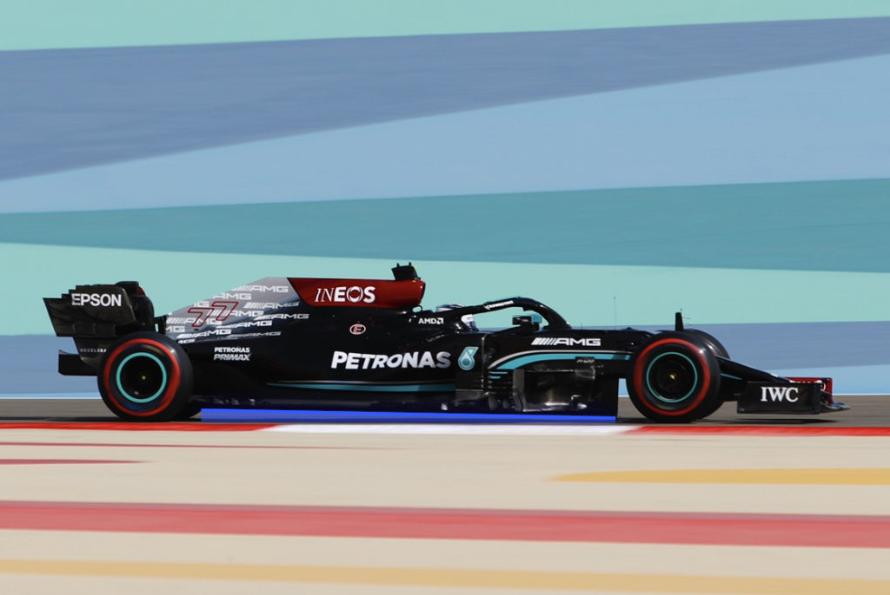
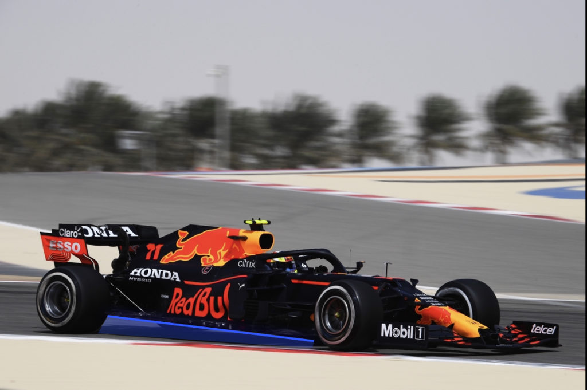

Luftmotstånd (Aerodynamics)
F1 bilen är en ensitsigbil med öppen cockpit och öppna hjul med motorn bakom föraren. En modern F1 bil
är byggd för att klara av snabba kurvor i 300 km/h. Det betyder att den är byggd med väldigt mycket luftmotstånd
Så kallat aerodynamics för att klara av den höga farten i kurvorna. Därför har den viktig bak och framvinge och ett stort golv
med väldigt anancerade detaljer för att få så mycket luftmotstånds som möjligt.Med mer luftmotstånd minkar motorns kraft
eftersom luften saktar ner bilen. De nyare Banorna med många svängar behöver mycket luftmotstånd medans de gamla
klassiska banorna med mindre svängar behöver mer motorkraft.
Motor
Förr i tiden var det väldigt fritt med motorerna men idag är det helt låst i vad man får göra. Motorerna ändras varje gång
det blir ett nytt reglemente och därmed ändras hela bilen. Det reglemente som används idag har man kört med sedan 2014
och kallas för turbo eran. Motorn är en 1.6 liter V6 turbo med 15000 RPM. De har också kommit till flera elektriska system som ökat hästkrafterna. MGU-K är ett elektriskt system som återanvänder en del av den kinetiska energin som försvinner vid bromsningen.
Denna energin lagras som i en generator och kan användas för att få mer effekt i bilen. Ett annat system är MGU-H som är ett värmesystem
som är kopplat med turboladdningen och tar vara på förlorad värme i turbon som sedna kan användas för mer effekt.
olika koncept 2021 (High rake vs Low rake)
High rake
Low Rake
  High rake innebär att den har har en högre bakände på bilen med en mer aggresiv
framände. Det ökar luftvolymen som går igenom eftersom det blir friare golvyta under bilen.
Bilen blir mer aggresiv fram och ostabil där bak. De långsamma svängarna är svårare men bilen
har en väldigt hög högstanivå som är väldigt svår att nå.
Low rake innebär att bilen har en låg bakände med mindre luftvolym vid golvet under bilen.
Den blir mer stabil och kan ta de långsamma svängarna bättre. Inte lika hög högstanivå som en High rake-bil kan nå
men är mycket mer stabil.